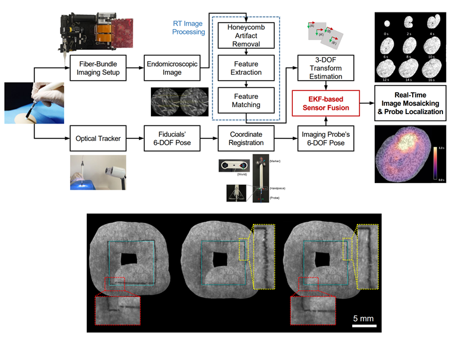

About 👋
I am Hyesung Lee, a Ph.D. student at KAIST (Kim Jaechul Graduate School of AI) and KIST, co-advised by Dr. Sungwook Yang and Prof. Kimin Lee. My research focuses on Force-Aware Dexterous Hand Manipulation to achieve human-level dexterity in robotic hands.
🧪Research Interests
- ✋Human level Dexterous Hand Manipulation
- 👁️Dynamics Aware Visuo-Force Representation Learning
- 🧱Vision-Haptic-Language-Action (VHLA) Models
📚Publications
Real-Time SLAM-Guided Closed-Loop Photodynamic Therapy with Pixel-Accurate Light-Dose Control
IEEE RA-L / ICRA, 2026
DexRefine: Refine Human Motion to Physically Feasible Robotic Actions
IEEE Humanoids Workshop, 2025

Real-time Endomicroscopic Image Mosaicking with an EKF-based Sensor Fusion Approach
IEEE EMBC, 2023
🎓Education
KAIST & KIST
Ph.D. in Kim Jaechul Graduate School of AI, March 2026 - Present
Advisor: Sungwook Yang (KIST), Kimin Lee (KAIST)
Korea University & KIST
M.S. in Computer Science, February 2024 - February 2026
Advisor: Sungwook Yang (KIST), Jinkyu Kim (Korea University)
Thesis: Learning to Refine Human Motion into Physically Feasible Robotic Actions for Dexterous Manipulation
Kwangwoon University
B.S. in School of Robotics, March 2017 - August 2023
Advisor: Jin-Oh Kim
💼Experience
KIST (Korea Institute of Science and Technology), Seoul, Republic of Korea
Intern, March 2023 - August 2024
- Researched Endomicroscopic Image SLAM and Sensor Fusion.
- Performed Photo-Theranosis System Integration.
Kakao Mobility, Seoul, Republic of Korea
Contract Worker, December 2021 - May 2022
- Built a Promotional Autonomous Driving Mobile Robot for Kakao NEMO 2022.
- Conducted Stereo Camera Visual Odometry Research.
Stryx (Startup), Seoul, Republic of Korea
Intern, September 2021 - December 2021
- Developed Road-Data Acquisition Software using 3D LiDAR, GNSS, and Machine Vision Cameras.
- Built a Sensor Calibration Visualization Tool using ROS RViz.
🏆Awards
- 2023.04 - Paper Excellence Award, KSME Bio Engineering Division Poster Presentation
- 2019.10 - 1st Place, National Defense Robot Contest (Hanwha Defense)
- 2019.08 - 2nd Place, Busan Robot Contest Turtlebot3 Autorace (Busan Bexco)
- 2018.11 - 3rd Place, 2018 R-BIZ Challenge Turtlebot3 Autorace (Daegu EXCO)
- 2018.10 - 5th Place, IRC 2018 Sumo Robot Competition (Ilsan KINTEX)
- 2017.11 - Grand Prize, Introduction to Engineering Design Exhibition (Kwangwoon University)